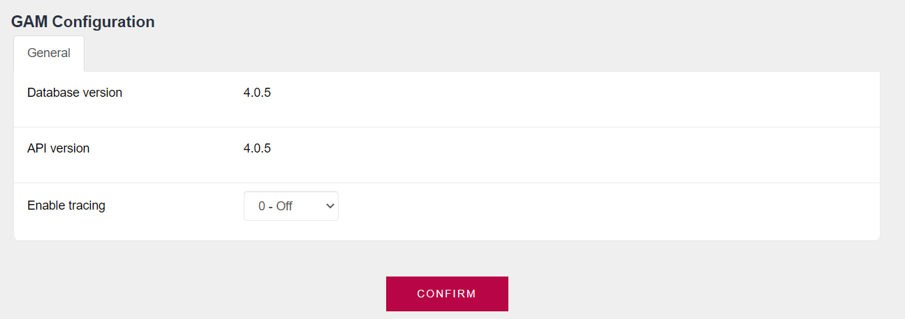
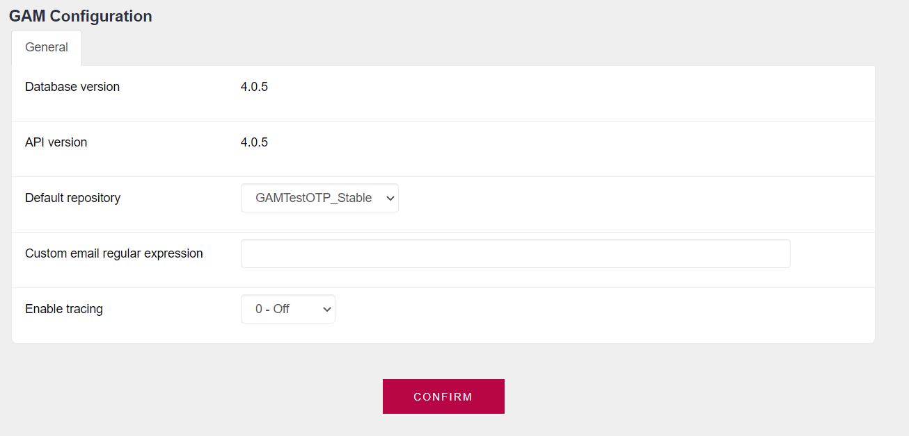

This screen displays general information about the GAM, such as the schema version of the knowledge base database, and the GAM API version with which the binaries were compiled.
In addition, there is an option to enable/disable the general GAM trace.
To access the GAM Configuration panel, go to Settings > GAM Configurations, to obtain (at first) the following view of the panel:

This menu view corresponds to a knowledge base that has only one repository; that is, it isn’t multitenant.
If you authenticate to the GAM backend, to the GAMManager repository, or if the repository has the property Enable working as GAMManager repository enabled, additional options will be enabled which are shown below:
